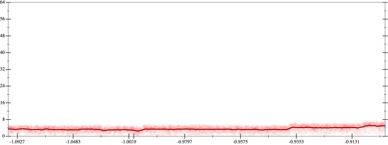
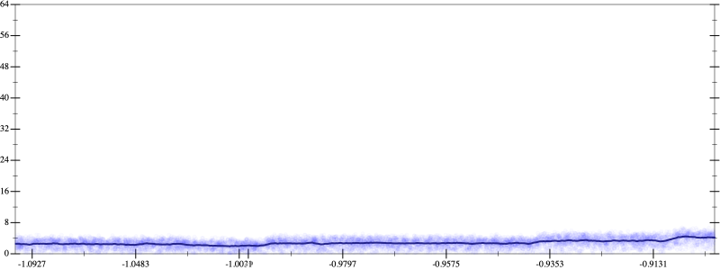
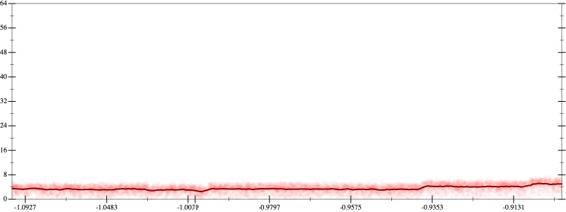
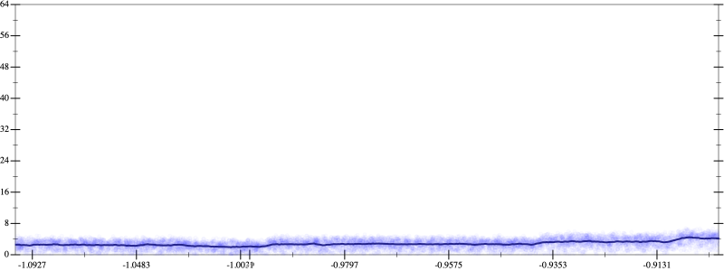

Initial program 3.5
\[\left(\left(\left(\left(\left(\left(-17297280.0 + 242161920.0 \cdot \left(x \cdot x\right)\right) + -484323840.0 \cdot \left(\left(\left(x \cdot x\right) \cdot x\right) \cdot x\right)\right) + 322882560.0 \cdot \left(\left(\left(\left(\left(x \cdot x\right) \cdot x\right) \cdot x\right) \cdot x\right) \cdot x\right)\right) + -92252160.0 \cdot \left(\left(\left(\left(\left(\left(\left(x \cdot x\right) \cdot x\right) \cdot x\right) \cdot x\right) \cdot x\right) \cdot x\right) \cdot x\right)\right) + 12300288.0 \cdot \left(\left(\left(\left(\left(\left(\left(\left(\left(x \cdot x\right) \cdot x\right) \cdot x\right) \cdot x\right) \cdot x\right) \cdot x\right) \cdot x\right) \cdot x\right) \cdot x\right)\right) + -745472.0 \cdot \left(\left(\left(\left(\left(\left(\left(\left(\left(\left(\left(x \cdot x\right) \cdot x\right) \cdot x\right) \cdot x\right) \cdot x\right) \cdot x\right) \cdot x\right) \cdot x\right) \cdot x\right) \cdot x\right) \cdot x\right)\right) + 16384.0 \cdot \left(\left(\left(\left(\left(\left(\left(\left(\left(\left(\left(\left(\left(x \cdot x\right) \cdot x\right) \cdot x\right) \cdot x\right) \cdot x\right) \cdot x\right) \cdot x\right) \cdot x\right) \cdot x\right) \cdot x\right) \cdot x\right) \cdot x\right) \cdot x\right)\]
- Using strategy
rm Applied add-cube-cbrt3.5
\[\leadsto \left(\left(\color{blue}{\left(\sqrt[3]{\left(\left(\left(-17297280.0 + 242161920.0 \cdot \left(x \cdot x\right)\right) + -484323840.0 \cdot \left(\left(\left(x \cdot x\right) \cdot x\right) \cdot x\right)\right) + 322882560.0 \cdot \left(\left(\left(\left(\left(x \cdot x\right) \cdot x\right) \cdot x\right) \cdot x\right) \cdot x\right)\right) + -92252160.0 \cdot \left(\left(\left(\left(\left(\left(\left(x \cdot x\right) \cdot x\right) \cdot x\right) \cdot x\right) \cdot x\right) \cdot x\right) \cdot x\right)} \cdot \sqrt[3]{\left(\left(\left(-17297280.0 + 242161920.0 \cdot \left(x \cdot x\right)\right) + -484323840.0 \cdot \left(\left(\left(x \cdot x\right) \cdot x\right) \cdot x\right)\right) + 322882560.0 \cdot \left(\left(\left(\left(\left(x \cdot x\right) \cdot x\right) \cdot x\right) \cdot x\right) \cdot x\right)\right) + -92252160.0 \cdot \left(\left(\left(\left(\left(\left(\left(x \cdot x\right) \cdot x\right) \cdot x\right) \cdot x\right) \cdot x\right) \cdot x\right) \cdot x\right)}\right) \cdot \sqrt[3]{\left(\left(\left(-17297280.0 + 242161920.0 \cdot \left(x \cdot x\right)\right) + -484323840.0 \cdot \left(\left(\left(x \cdot x\right) \cdot x\right) \cdot x\right)\right) + 322882560.0 \cdot \left(\left(\left(\left(\left(x \cdot x\right) \cdot x\right) \cdot x\right) \cdot x\right) \cdot x\right)\right) + -92252160.0 \cdot \left(\left(\left(\left(\left(\left(\left(x \cdot x\right) \cdot x\right) \cdot x\right) \cdot x\right) \cdot x\right) \cdot x\right) \cdot x\right)}} + 12300288.0 \cdot \left(\left(\left(\left(\left(\left(\left(\left(\left(x \cdot x\right) \cdot x\right) \cdot x\right) \cdot x\right) \cdot x\right) \cdot x\right) \cdot x\right) \cdot x\right) \cdot x\right)\right) + -745472.0 \cdot \left(\left(\left(\left(\left(\left(\left(\left(\left(\left(\left(x \cdot x\right) \cdot x\right) \cdot x\right) \cdot x\right) \cdot x\right) \cdot x\right) \cdot x\right) \cdot x\right) \cdot x\right) \cdot x\right) \cdot x\right)\right) + 16384.0 \cdot \left(\left(\left(\left(\left(\left(\left(\left(\left(\left(\left(\left(\left(x \cdot x\right) \cdot x\right) \cdot x\right) \cdot x\right) \cdot x\right) \cdot x\right) \cdot x\right) \cdot x\right) \cdot x\right) \cdot x\right) \cdot x\right) \cdot x\right) \cdot x\right)\]
Applied simplify3.0
\[\leadsto \left(\left(\color{blue}{\left(\sqrt[3]{\left(\left(x \cdot x\right) \cdot \left(x \cdot x\right)\right) \cdot \left(\left(x \cdot x\right) \cdot 322882560.0 + -484323840.0\right) + \left(\left(\left(x \cdot x\right) \cdot 242161920.0 + -17297280.0\right) + \left(\left(x \cdot x\right) \cdot -92252160.0\right) \cdot {\left(x \cdot x\right)}^{3}\right)} \cdot \sqrt[3]{\left(\left(x \cdot x\right) \cdot \left(x \cdot x\right)\right) \cdot \left(\left(x \cdot x\right) \cdot 322882560.0 + -484323840.0\right) + \left(\left(\left(x \cdot x\right) \cdot 242161920.0 + -17297280.0\right) + \left(\left(x \cdot x\right) \cdot -92252160.0\right) \cdot {\left(x \cdot x\right)}^{3}\right)}\right)} \cdot \sqrt[3]{\left(\left(\left(-17297280.0 + 242161920.0 \cdot \left(x \cdot x\right)\right) + -484323840.0 \cdot \left(\left(\left(x \cdot x\right) \cdot x\right) \cdot x\right)\right) + 322882560.0 \cdot \left(\left(\left(\left(\left(x \cdot x\right) \cdot x\right) \cdot x\right) \cdot x\right) \cdot x\right)\right) + -92252160.0 \cdot \left(\left(\left(\left(\left(\left(\left(x \cdot x\right) \cdot x\right) \cdot x\right) \cdot x\right) \cdot x\right) \cdot x\right) \cdot x\right)} + 12300288.0 \cdot \left(\left(\left(\left(\left(\left(\left(\left(\left(x \cdot x\right) \cdot x\right) \cdot x\right) \cdot x\right) \cdot x\right) \cdot x\right) \cdot x\right) \cdot x\right) \cdot x\right)\right) + -745472.0 \cdot \left(\left(\left(\left(\left(\left(\left(\left(\left(\left(\left(x \cdot x\right) \cdot x\right) \cdot x\right) \cdot x\right) \cdot x\right) \cdot x\right) \cdot x\right) \cdot x\right) \cdot x\right) \cdot x\right) \cdot x\right)\right) + 16384.0 \cdot \left(\left(\left(\left(\left(\left(\left(\left(\left(\left(\left(\left(\left(x \cdot x\right) \cdot x\right) \cdot x\right) \cdot x\right) \cdot x\right) \cdot x\right) \cdot x\right) \cdot x\right) \cdot x\right) \cdot x\right) \cdot x\right) \cdot x\right) \cdot x\right)\]
Applied simplify2.9
\[\leadsto \left(\left(\left(\sqrt[3]{\left(\left(x \cdot x\right) \cdot \left(x \cdot x\right)\right) \cdot \left(\left(x \cdot x\right) \cdot 322882560.0 + -484323840.0\right) + \left(\left(\left(x \cdot x\right) \cdot 242161920.0 + -17297280.0\right) + \left(\left(x \cdot x\right) \cdot -92252160.0\right) \cdot {\left(x \cdot x\right)}^{3}\right)} \cdot \sqrt[3]{\left(\left(x \cdot x\right) \cdot \left(x \cdot x\right)\right) \cdot \left(\left(x \cdot x\right) \cdot 322882560.0 + -484323840.0\right) + \left(\left(\left(x \cdot x\right) \cdot 242161920.0 + -17297280.0\right) + \left(\left(x \cdot x\right) \cdot -92252160.0\right) \cdot {\left(x \cdot x\right)}^{3}\right)}\right) \cdot \color{blue}{\sqrt[3]{\left(-17297280.0 + \left(\left(x \cdot -484323840.0\right) \cdot {x}^{3} + x \cdot \left(x \cdot 242161920.0\right)\right)\right) + \left({x}^{3} \cdot {x}^{3}\right) \cdot \left(\left(x \cdot x\right) \cdot -92252160.0 + 322882560.0\right)}} + 12300288.0 \cdot \left(\left(\left(\left(\left(\left(\left(\left(\left(x \cdot x\right) \cdot x\right) \cdot x\right) \cdot x\right) \cdot x\right) \cdot x\right) \cdot x\right) \cdot x\right) \cdot x\right)\right) + -745472.0 \cdot \left(\left(\left(\left(\left(\left(\left(\left(\left(\left(\left(x \cdot x\right) \cdot x\right) \cdot x\right) \cdot x\right) \cdot x\right) \cdot x\right) \cdot x\right) \cdot x\right) \cdot x\right) \cdot x\right) \cdot x\right)\right) + 16384.0 \cdot \left(\left(\left(\left(\left(\left(\left(\left(\left(\left(\left(\left(\left(x \cdot x\right) \cdot x\right) \cdot x\right) \cdot x\right) \cdot x\right) \cdot x\right) \cdot x\right) \cdot x\right) \cdot x\right) \cdot x\right) \cdot x\right) \cdot x\right) \cdot x\right)\]
- Using strategy
rm Applied unpow-prod-down2.8
\[\leadsto \left(\left(\left(\sqrt[3]{\left(\left(x \cdot x\right) \cdot \left(x \cdot x\right)\right) \cdot \left(\left(x \cdot x\right) \cdot 322882560.0 + -484323840.0\right) + \left(\left(\left(x \cdot x\right) \cdot 242161920.0 + -17297280.0\right) + \left(\left(x \cdot x\right) \cdot -92252160.0\right) \cdot {\left(x \cdot x\right)}^{3}\right)} \cdot \sqrt[3]{\left(\left(x \cdot x\right) \cdot \left(x \cdot x\right)\right) \cdot \left(\left(x \cdot x\right) \cdot 322882560.0 + -484323840.0\right) + \left(\left(\left(x \cdot x\right) \cdot 242161920.0 + -17297280.0\right) + \left(\left(x \cdot x\right) \cdot -92252160.0\right) \cdot \color{blue}{\left({x}^{3} \cdot {x}^{3}\right)}\right)}\right) \cdot \sqrt[3]{\left(-17297280.0 + \left(\left(x \cdot -484323840.0\right) \cdot {x}^{3} + x \cdot \left(x \cdot 242161920.0\right)\right)\right) + \left({x}^{3} \cdot {x}^{3}\right) \cdot \left(\left(x \cdot x\right) \cdot -92252160.0 + 322882560.0\right)} + 12300288.0 \cdot \left(\left(\left(\left(\left(\left(\left(\left(\left(x \cdot x\right) \cdot x\right) \cdot x\right) \cdot x\right) \cdot x\right) \cdot x\right) \cdot x\right) \cdot x\right) \cdot x\right)\right) + -745472.0 \cdot \left(\left(\left(\left(\left(\left(\left(\left(\left(\left(\left(x \cdot x\right) \cdot x\right) \cdot x\right) \cdot x\right) \cdot x\right) \cdot x\right) \cdot x\right) \cdot x\right) \cdot x\right) \cdot x\right) \cdot x\right)\right) + 16384.0 \cdot \left(\left(\left(\left(\left(\left(\left(\left(\left(\left(\left(\left(\left(x \cdot x\right) \cdot x\right) \cdot x\right) \cdot x\right) \cdot x\right) \cdot x\right) \cdot x\right) \cdot x\right) \cdot x\right) \cdot x\right) \cdot x\right) \cdot x\right) \cdot x\right)\]
- Using strategy
rm Applied add-cube-cbrt2.8
\[\leadsto \left(\left(\left(\sqrt[3]{\color{blue}{\left(\sqrt[3]{\left(\left(x \cdot x\right) \cdot \left(x \cdot x\right)\right) \cdot \left(\left(x \cdot x\right) \cdot 322882560.0 + -484323840.0\right) + \left(\left(\left(x \cdot x\right) \cdot 242161920.0 + -17297280.0\right) + \left(\left(x \cdot x\right) \cdot -92252160.0\right) \cdot {\left(x \cdot x\right)}^{3}\right)} \cdot \sqrt[3]{\left(\left(x \cdot x\right) \cdot \left(x \cdot x\right)\right) \cdot \left(\left(x \cdot x\right) \cdot 322882560.0 + -484323840.0\right) + \left(\left(\left(x \cdot x\right) \cdot 242161920.0 + -17297280.0\right) + \left(\left(x \cdot x\right) \cdot -92252160.0\right) \cdot {\left(x \cdot x\right)}^{3}\right)}\right) \cdot \sqrt[3]{\left(\left(x \cdot x\right) \cdot \left(x \cdot x\right)\right) \cdot \left(\left(x \cdot x\right) \cdot 322882560.0 + -484323840.0\right) + \left(\left(\left(x \cdot x\right) \cdot 242161920.0 + -17297280.0\right) + \left(\left(x \cdot x\right) \cdot -92252160.0\right) \cdot {\left(x \cdot x\right)}^{3}\right)}}} \cdot \sqrt[3]{\left(\left(x \cdot x\right) \cdot \left(x \cdot x\right)\right) \cdot \left(\left(x \cdot x\right) \cdot 322882560.0 + -484323840.0\right) + \left(\left(\left(x \cdot x\right) \cdot 242161920.0 + -17297280.0\right) + \left(\left(x \cdot x\right) \cdot -92252160.0\right) \cdot \left({x}^{3} \cdot {x}^{3}\right)\right)}\right) \cdot \sqrt[3]{\left(-17297280.0 + \left(\left(x \cdot -484323840.0\right) \cdot {x}^{3} + x \cdot \left(x \cdot 242161920.0\right)\right)\right) + \left({x}^{3} \cdot {x}^{3}\right) \cdot \left(\left(x \cdot x\right) \cdot -92252160.0 + 322882560.0\right)} + 12300288.0 \cdot \left(\left(\left(\left(\left(\left(\left(\left(\left(x \cdot x\right) \cdot x\right) \cdot x\right) \cdot x\right) \cdot x\right) \cdot x\right) \cdot x\right) \cdot x\right) \cdot x\right)\right) + -745472.0 \cdot \left(\left(\left(\left(\left(\left(\left(\left(\left(\left(\left(x \cdot x\right) \cdot x\right) \cdot x\right) \cdot x\right) \cdot x\right) \cdot x\right) \cdot x\right) \cdot x\right) \cdot x\right) \cdot x\right) \cdot x\right)\right) + 16384.0 \cdot \left(\left(\left(\left(\left(\left(\left(\left(\left(\left(\left(\left(\left(x \cdot x\right) \cdot x\right) \cdot x\right) \cdot x\right) \cdot x\right) \cdot x\right) \cdot x\right) \cdot x\right) \cdot x\right) \cdot x\right) \cdot x\right) \cdot x\right) \cdot x\right)\]
Applied simplify2.8
\[\leadsto \left(\left(\left(\sqrt[3]{\color{blue}{\left(\sqrt[3]{\left(\left(x \cdot x\right) \cdot \left(x \cdot x\right)\right) \cdot \left(322882560.0 \cdot \left(x \cdot x\right) + -484323840.0\right) + \left({\left(x \cdot x\right)}^{\left(3 + 1\right)} \cdot -92252160.0 + \left(\left(x \cdot x\right) \cdot 242161920.0 + -17297280.0\right)\right)} \cdot \sqrt[3]{\left(\left(x \cdot x\right) \cdot \left(x \cdot x\right)\right) \cdot \left(322882560.0 \cdot \left(x \cdot x\right) + -484323840.0\right) + \left({\left(x \cdot x\right)}^{\left(3 + 1\right)} \cdot -92252160.0 + \left(\left(x \cdot x\right) \cdot 242161920.0 + -17297280.0\right)\right)}\right)} \cdot \sqrt[3]{\left(\left(x \cdot x\right) \cdot \left(x \cdot x\right)\right) \cdot \left(\left(x \cdot x\right) \cdot 322882560.0 + -484323840.0\right) + \left(\left(\left(x \cdot x\right) \cdot 242161920.0 + -17297280.0\right) + \left(\left(x \cdot x\right) \cdot -92252160.0\right) \cdot {\left(x \cdot x\right)}^{3}\right)}} \cdot \sqrt[3]{\left(\left(x \cdot x\right) \cdot \left(x \cdot x\right)\right) \cdot \left(\left(x \cdot x\right) \cdot 322882560.0 + -484323840.0\right) + \left(\left(\left(x \cdot x\right) \cdot 242161920.0 + -17297280.0\right) + \left(\left(x \cdot x\right) \cdot -92252160.0\right) \cdot \left({x}^{3} \cdot {x}^{3}\right)\right)}\right) \cdot \sqrt[3]{\left(-17297280.0 + \left(\left(x \cdot -484323840.0\right) \cdot {x}^{3} + x \cdot \left(x \cdot 242161920.0\right)\right)\right) + \left({x}^{3} \cdot {x}^{3}\right) \cdot \left(\left(x \cdot x\right) \cdot -92252160.0 + 322882560.0\right)} + 12300288.0 \cdot \left(\left(\left(\left(\left(\left(\left(\left(\left(x \cdot x\right) \cdot x\right) \cdot x\right) \cdot x\right) \cdot x\right) \cdot x\right) \cdot x\right) \cdot x\right) \cdot x\right)\right) + -745472.0 \cdot \left(\left(\left(\left(\left(\left(\left(\left(\left(\left(\left(x \cdot x\right) \cdot x\right) \cdot x\right) \cdot x\right) \cdot x\right) \cdot x\right) \cdot x\right) \cdot x\right) \cdot x\right) \cdot x\right) \cdot x\right)\right) + 16384.0 \cdot \left(\left(\left(\left(\left(\left(\left(\left(\left(\left(\left(\left(\left(x \cdot x\right) \cdot x\right) \cdot x\right) \cdot x\right) \cdot x\right) \cdot x\right) \cdot x\right) \cdot x\right) \cdot x\right) \cdot x\right) \cdot x\right) \cdot x\right) \cdot x\right)\]
Applied simplify2.8
\[\leadsto \left(\left(\left(\sqrt[3]{\left(\sqrt[3]{\left(\left(x \cdot x\right) \cdot \left(x \cdot x\right)\right) \cdot \left(322882560.0 \cdot \left(x \cdot x\right) + -484323840.0\right) + \left({\left(x \cdot x\right)}^{\left(3 + 1\right)} \cdot -92252160.0 + \left(\left(x \cdot x\right) \cdot 242161920.0 + -17297280.0\right)\right)} \cdot \sqrt[3]{\left(\left(x \cdot x\right) \cdot \left(x \cdot x\right)\right) \cdot \left(322882560.0 \cdot \left(x \cdot x\right) + -484323840.0\right) + \left({\left(x \cdot x\right)}^{\left(3 + 1\right)} \cdot -92252160.0 + \left(\left(x \cdot x\right) \cdot 242161920.0 + -17297280.0\right)\right)}\right) \cdot \color{blue}{\sqrt[3]{\left(\left(\left(x \cdot 242161920.0\right) \cdot x + -17297280.0\right) + {x}^{3} \cdot \left(-484323840.0 \cdot x\right)\right) + \left({x}^{3} \cdot {x}^{3}\right) \cdot \left(322882560.0 + \left(-92252160.0 \cdot x\right) \cdot x\right)}}} \cdot \sqrt[3]{\left(\left(x \cdot x\right) \cdot \left(x \cdot x\right)\right) \cdot \left(\left(x \cdot x\right) \cdot 322882560.0 + -484323840.0\right) + \left(\left(\left(x \cdot x\right) \cdot 242161920.0 + -17297280.0\right) + \left(\left(x \cdot x\right) \cdot -92252160.0\right) \cdot \left({x}^{3} \cdot {x}^{3}\right)\right)}\right) \cdot \sqrt[3]{\left(-17297280.0 + \left(\left(x \cdot -484323840.0\right) \cdot {x}^{3} + x \cdot \left(x \cdot 242161920.0\right)\right)\right) + \left({x}^{3} \cdot {x}^{3}\right) \cdot \left(\left(x \cdot x\right) \cdot -92252160.0 + 322882560.0\right)} + 12300288.0 \cdot \left(\left(\left(\left(\left(\left(\left(\left(\left(x \cdot x\right) \cdot x\right) \cdot x\right) \cdot x\right) \cdot x\right) \cdot x\right) \cdot x\right) \cdot x\right) \cdot x\right)\right) + -745472.0 \cdot \left(\left(\left(\left(\left(\left(\left(\left(\left(\left(\left(x \cdot x\right) \cdot x\right) \cdot x\right) \cdot x\right) \cdot x\right) \cdot x\right) \cdot x\right) \cdot x\right) \cdot x\right) \cdot x\right) \cdot x\right)\right) + 16384.0 \cdot \left(\left(\left(\left(\left(\left(\left(\left(\left(\left(\left(\left(\left(x \cdot x\right) \cdot x\right) \cdot x\right) \cdot x\right) \cdot x\right) \cdot x\right) \cdot x\right) \cdot x\right) \cdot x\right) \cdot x\right) \cdot x\right) \cdot x\right) \cdot x\right)\]
- Using strategy
rm Applied add-cbrt-cube2.8
\[\leadsto \left(\left(\left(\sqrt[3]{\left(\sqrt[3]{\left(\left(x \cdot x\right) \cdot \left(x \cdot x\right)\right) \cdot \left(322882560.0 \cdot \left(x \cdot x\right) + -484323840.0\right) + \left({\left(x \cdot x\right)}^{\left(3 + 1\right)} \cdot -92252160.0 + \left(\left(x \cdot x\right) \cdot 242161920.0 + -17297280.0\right)\right)} \cdot \sqrt[3]{\left(\left(x \cdot x\right) \cdot \left(x \cdot x\right)\right) \cdot \left(322882560.0 \cdot \left(x \cdot x\right) + -484323840.0\right) + \left({\left(x \cdot x\right)}^{\left(3 + 1\right)} \cdot -92252160.0 + \left(\left(x \cdot x\right) \cdot 242161920.0 + -17297280.0\right)\right)}\right) \cdot \sqrt[3]{\left(\left(\left(x \cdot 242161920.0\right) \cdot x + -17297280.0\right) + {x}^{3} \cdot \left(-484323840.0 \cdot x\right)\right) + \left({x}^{3} \cdot {x}^{3}\right) \cdot \left(322882560.0 + \left(-92252160.0 \cdot x\right) \cdot x\right)}} \cdot \sqrt[3]{\color{blue}{\sqrt[3]{\left(\left(\left(\left(x \cdot x\right) \cdot \left(x \cdot x\right)\right) \cdot \left(\left(x \cdot x\right) \cdot 322882560.0 + -484323840.0\right) + \left(\left(\left(x \cdot x\right) \cdot 242161920.0 + -17297280.0\right) + \left(\left(x \cdot x\right) \cdot -92252160.0\right) \cdot \left({x}^{3} \cdot {x}^{3}\right)\right)\right) \cdot \left(\left(\left(x \cdot x\right) \cdot \left(x \cdot x\right)\right) \cdot \left(\left(x \cdot x\right) \cdot 322882560.0 + -484323840.0\right) + \left(\left(\left(x \cdot x\right) \cdot 242161920.0 + -17297280.0\right) + \left(\left(x \cdot x\right) \cdot -92252160.0\right) \cdot \left({x}^{3} \cdot {x}^{3}\right)\right)\right)\right) \cdot \left(\left(\left(x \cdot x\right) \cdot \left(x \cdot x\right)\right) \cdot \left(\left(x \cdot x\right) \cdot 322882560.0 + -484323840.0\right) + \left(\left(\left(x \cdot x\right) \cdot 242161920.0 + -17297280.0\right) + \left(\left(x \cdot x\right) \cdot -92252160.0\right) \cdot \left({x}^{3} \cdot {x}^{3}\right)\right)\right)}}}\right) \cdot \sqrt[3]{\left(-17297280.0 + \left(\left(x \cdot -484323840.0\right) \cdot {x}^{3} + x \cdot \left(x \cdot 242161920.0\right)\right)\right) + \left({x}^{3} \cdot {x}^{3}\right) \cdot \left(\left(x \cdot x\right) \cdot -92252160.0 + 322882560.0\right)} + 12300288.0 \cdot \left(\left(\left(\left(\left(\left(\left(\left(\left(x \cdot x\right) \cdot x\right) \cdot x\right) \cdot x\right) \cdot x\right) \cdot x\right) \cdot x\right) \cdot x\right) \cdot x\right)\right) + -745472.0 \cdot \left(\left(\left(\left(\left(\left(\left(\left(\left(\left(\left(x \cdot x\right) \cdot x\right) \cdot x\right) \cdot x\right) \cdot x\right) \cdot x\right) \cdot x\right) \cdot x\right) \cdot x\right) \cdot x\right) \cdot x\right)\right) + 16384.0 \cdot \left(\left(\left(\left(\left(\left(\left(\left(\left(\left(\left(\left(\left(x \cdot x\right) \cdot x\right) \cdot x\right) \cdot x\right) \cdot x\right) \cdot x\right) \cdot x\right) \cdot x\right) \cdot x\right) \cdot x\right) \cdot x\right) \cdot x\right) \cdot x\right)\]
Applied simplify2.8
\[\leadsto \left(\left(\left(\sqrt[3]{\left(\sqrt[3]{\left(\left(x \cdot x\right) \cdot \left(x \cdot x\right)\right) \cdot \left(322882560.0 \cdot \left(x \cdot x\right) + -484323840.0\right) + \left({\left(x \cdot x\right)}^{\left(3 + 1\right)} \cdot -92252160.0 + \left(\left(x \cdot x\right) \cdot 242161920.0 + -17297280.0\right)\right)} \cdot \sqrt[3]{\left(\left(x \cdot x\right) \cdot \left(x \cdot x\right)\right) \cdot \left(322882560.0 \cdot \left(x \cdot x\right) + -484323840.0\right) + \left({\left(x \cdot x\right)}^{\left(3 + 1\right)} \cdot -92252160.0 + \left(\left(x \cdot x\right) \cdot 242161920.0 + -17297280.0\right)\right)}\right) \cdot \sqrt[3]{\left(\left(\left(x \cdot 242161920.0\right) \cdot x + -17297280.0\right) + {x}^{3} \cdot \left(-484323840.0 \cdot x\right)\right) + \left({x}^{3} \cdot {x}^{3}\right) \cdot \left(322882560.0 + \left(-92252160.0 \cdot x\right) \cdot x\right)}} \cdot \sqrt[3]{\sqrt[3]{\color{blue}{{\left(\left(\left(\left(-92252160.0 \cdot x\right) \cdot x\right) \cdot \left({x}^{3} \cdot {x}^{3}\right) + \left(\left(x \cdot x\right) \cdot 242161920.0 + -17297280.0\right)\right) + \left(\left(x \cdot x\right) \cdot \left(x \cdot x\right)\right) \cdot \left(\left(322882560.0 \cdot x\right) \cdot x + -484323840.0\right)\right)}^{3}}}}\right) \cdot \sqrt[3]{\left(-17297280.0 + \left(\left(x \cdot -484323840.0\right) \cdot {x}^{3} + x \cdot \left(x \cdot 242161920.0\right)\right)\right) + \left({x}^{3} \cdot {x}^{3}\right) \cdot \left(\left(x \cdot x\right) \cdot -92252160.0 + 322882560.0\right)} + 12300288.0 \cdot \left(\left(\left(\left(\left(\left(\left(\left(\left(x \cdot x\right) \cdot x\right) \cdot x\right) \cdot x\right) \cdot x\right) \cdot x\right) \cdot x\right) \cdot x\right) \cdot x\right)\right) + -745472.0 \cdot \left(\left(\left(\left(\left(\left(\left(\left(\left(\left(\left(x \cdot x\right) \cdot x\right) \cdot x\right) \cdot x\right) \cdot x\right) \cdot x\right) \cdot x\right) \cdot x\right) \cdot x\right) \cdot x\right) \cdot x\right)\right) + 16384.0 \cdot \left(\left(\left(\left(\left(\left(\left(\left(\left(\left(\left(\left(\left(x \cdot x\right) \cdot x\right) \cdot x\right) \cdot x\right) \cdot x\right) \cdot x\right) \cdot x\right) \cdot x\right) \cdot x\right) \cdot x\right) \cdot x\right) \cdot x\right) \cdot x\right)\]
 
